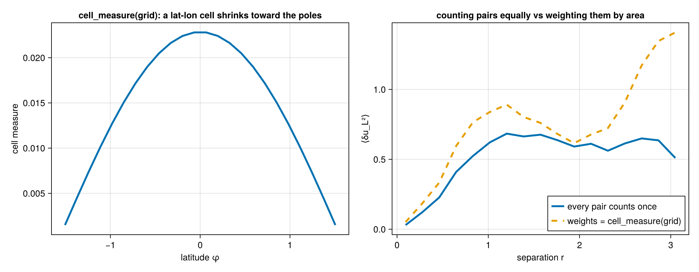
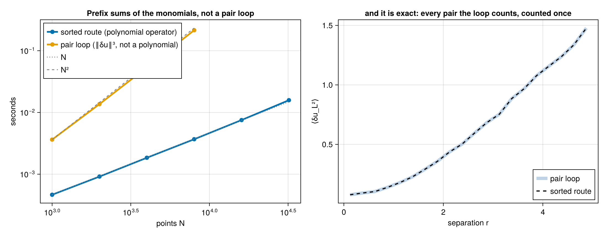
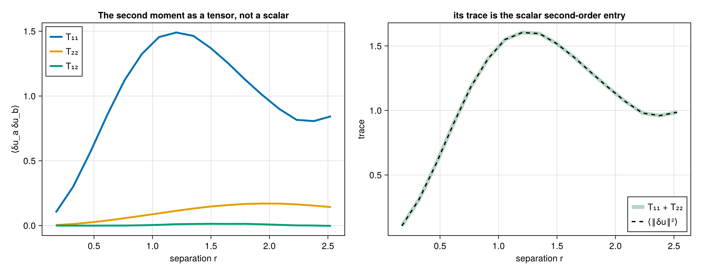
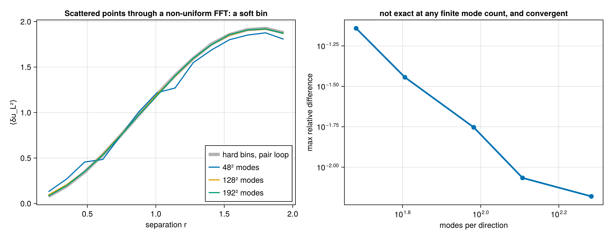
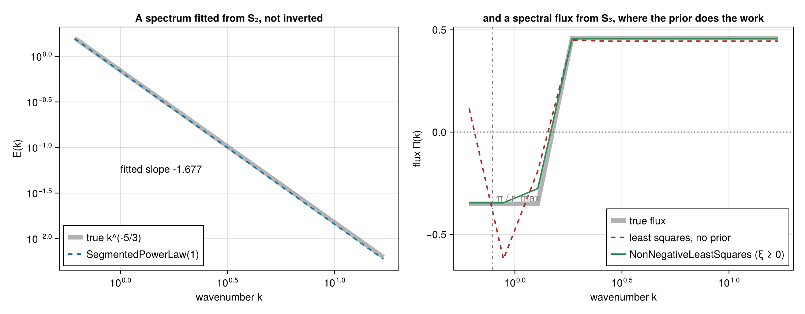

Walkthrough: from a velocity field to a cascade diagnostic
This page runs one analysis end to end: six structure-function invariants, the Helmholtz split, the directional signal and the spectral slope. The fields are ones whose answers are known in advance, so every number below can be compared against a value derived independently.
Two acts, because the two data layouts take different algorithms. Scattered points go through the pair loop; a uniform grid goes through the transform, which is exact and about two orders of magnitude faster.
Act 1 — scattered points
A superposition of Fourier modes whose polarisations are perpendicular to their wavevectors is divergence-free by construction, so we know its divergent part is zero before computing anything.
using StructureFunctions: StructureFunctions as SF, Calculations as SFC,
StructureFunctionTypes as SFT
using ComputationalBackends: ComputationalBackends as CB
using StaticArrays: StaticArrays as SA
using Random
function solenoidal_field(x; kmin = 3, kmax = 40, seed = 42)
rng = Random.MersenneTwister(seed)
N = size(x, 2)
u = zeros(2, N)
for a in -kmax:kmax, b in -kmax:kmax
k = sqrt(a^2 + b^2)
(kmin <= k <= kmax && a > 0) || continue
amp = k^(-4 / 3) # gives an E(k) ~ k^(-5/3) shell energy
φ = 2π * rand(rng)
ex, ey = -b / k, a / k # perpendicular to k, hence divergence-free
for p in 1:N
c = amp * cos(a * x[1, p] + b * x[2, p] + φ)
u[1, p] += c * ex
u[2, p] += c * ey
end
end
return u
end
Random.seed!(9)
x = 2π .* rand(2, 6000)
u = solenoidal_field(x)A point list carries no mask. A non-finite sample makes every bin it pairs into NaN, as any sum does, so drop such points before the call: keep = vec(all(isfinite, u; dims = 1)), then x[:, keep] and u[:, keep]. Grids are different, because their lags and transforms need every cell in place; there the mask travels with the data (Act 2).
Six invariants in one pass
The six second- and third-order invariants share a pair loop, a separation and a bin, so computing them together costs one pass rather than six.
bins = collect(10 .^ range(log10(0.05), log10(2.0); length = 25))
res = SFC.calculate_structure_functions_single_pass(x, u, bins; backend = CB.SerialBackend())
keys(res)
# (:S2, :L2, :T2, :S3, :L3, :L1T2, :helmholtz)That is 18.0 million pairs. Culling is on by default, so pairs beyond the last bin edge are never enumerated.
The Helmholtz split
The rotational and divergent parts of the second-order structure function come from the longitudinal and transverse components, and arrive with the single pass.
h = res.helmholtz
D_rot = h.rotational_sums ./ max.(h.rotational_counts, 1)
D_div = h.divergent_sums ./ max.(h.divergent_counts, 1)
occ = isfinite.(res.L2.values) .& (h.rotational_counts .> 0)
maximum(abs, D_div[occ]) / maximum(res.L2.values[occ]) # 0.1195
maximum(abs, (D_rot .+ D_div .- (res.L2.values .+ res.T2.values))[occ]) # 2.2e-16The field is solenoidal, so the true divergent part is zero and the residual 0.1195 is the decomposition's own quadrature floor. It comes from the integral's lower limit: the cumulative integral starts at the first bin's abscissa rather than at zero, and the omitted segment carries real weight when the integrand rises at small separation. Narrowing the first bin shrinks it — running the same field over log10(0.05) to log10(2.0) with a band of kmin = 4, kmax = 20 instead gives 0.0317.
The energy identity D_rot + D_div = D_LL + D_TT holds to 2.2e-16. Note that this identity is not a check on the split: it is preserved by a whole family of errors in it, including a factor-of-r defect this package once carried. See Validation.
Directional output
The second histogram axis can bin the angle between the separation and a reference direction instead of the operator's value, which turns S(r) into S(r, θ) without touching the kernel.
ua = zeros(2, size(x, 2))
ua[1, :] .= sin.(6 .* x[1, :]) # varies along x only
ang = collect(range(0, π; length = 5))
dj = collect(range(0.0, 1.2; length = 6))
j = SFC.serial_calculate_structure_function(
SFT.L2SFType(), x, ua, dj, ang;
second_axis = SFC.SeparationAngleAxis(SA.SVector(1.0, 0.0)),
verbose = false, show_progress = false)Averaged over separation, the four angular bins give
| θ | ⟨δu_L²⟩ |
|---|---|
| [0, π/4) | 0.806 |
| [π/4, π/2) | 0.250 |
| [π/2, 3π/4) | 0.252 |
| [3π/4, π) | 0.801 |
a 3.2× anisotropy, in the right sense: the field varies only along x, so separations aligned with x see the full increment. The perpendicular bin is not zero because it spans 45°–90°, and only exactly perpendicular separations have an identically zero increment.
The angle folds to [0, π) because swapping a pair's ends flips both the separation and the increment, and no structure function distinguishes the two.
The exact laws
The inertial-range laws are inversions of a measured moment. Each takes the specific moment it is stated for, and they are not interchangeable:
r = collect(range(0.2, 3.0; length = 8))
SF.KHM.epsilon_from_four_fifths(r, -(4 / 5) * 0.85 .* r)[1] # 0.850000Applied to this field, though, the answer is that there is nothing to recover: a synthetic Gaussian field has no energy cascade, so its third-order moments are consistent with zero (⟨δu_L³⟩ = 1.3e-2 against ⟨δu_L²⟩ ≈ 1, i.e. sampling noise). A meaningful ε needs data with a genuine flux — a forced simulation or an observational record.
Pair weights
A weight per point turns every statistic into Σ w_i w_j v_ij / Σ w_i w_j and the counts into a weighted pair mass, which is why weighted results take floating-point counts:
w = 0.5 .+ rand(size(x, 2))
sfw = SFC.calculate_structure_function(SFT.L2SFType(), x, u, bins, Float64; weights = w,
backend = CB.SerialBackend())Weights of one reproduce the unweighted result bit for bit. On a grid, cell_measure(grid) gives the cell areas, so a lat-lon sum becomes an area average — the same weighting the harmonic route uses.

A lat-lon cell shrinks toward the poles, so weighting the pairs by cell_measure(grid) moves the average away from the one that counts every pair once.
Points on a line
One-dimensional data — a transect, a time series read as a line — never needs the pair loop. Once the points are sorted, every bin of every point is one index range, and the polynomial moments over a range are prefix-sum differences of the monomials. The CPU backends take this route automatically for every polynomial operator, arrays and multi-fields alike, and its cost is O(N log N + N n_bins):
xl = reshape(sort(rand(100_000)) .* 100.0, 1, :)
ul = randn(1, 100_000)
sfl = SFC.calculate_structure_function(SFT.L3SFType(), xl, ul, collect(range(0.0, 0.5; length = 21)), Int64)On eight cores a million points — five billion pairs binned — take 0.4 s; the pair loop on the same data would take an hour. Counts are bit for bit the pair loop's, because the route bins each pair with the same digitize call on the same coordinate difference.

Left: the sorted route's cost grows with the points, the pair loop's with their square. Right: it is the pair loop's answer, not an approximation of it.
Act 2 — a uniform grid
On a grid the same quantity is available by transform, exactly, for every lag at once.
using SpectralBackends: SpectralBackends as SB
using FFTW: FFTW
function spectral_field(n; kmin, kmax, seed = 5)
rng = Random.MersenneTwister(seed)
Fx = zeros(ComplexF64, n ÷ 2 + 1, n)
Fy = zeros(ComplexF64, n ÷ 2 + 1, n)
for ix in 1:(n ÷ 2 + 1), iy in 1:n
kx = ix - 1
ky = iy - 1 <= n ÷ 2 ? iy - 1 : iy - 1 - n
k = sqrt(kx^2 + ky^2)
(kmin <= k <= kmax) || continue
amp = k^(-4 / 3) * n^2
ph = exp(im * 2π * rand(rng))
Fx[ix, iy] = amp * ph * (-ky / k) # perpendicular to k, so k·û = 0
Fy[ix, iy] = amp * ph * (kx / k)
end
u = zeros(2, n, n)
u[1, :, :] .= FFTW.irfft(Fx, n)
u[2, :, :] .= FFTW.irfft(Fy, n)
return u
end
n = 256
dx = 2π / n
u = spectral_field(n; kmin = 2, kmax = 100)
bins = collect(10 .^ range(log10(1.5 * dx), log10(2.6); length = 33))
plan = SFC.squared_digitize_plan(bins)
sums = zeros(Float64, SFC.n_histogram_bins(plan))
counts = zeros(Int, length(sums))
sched = SFC.UniformLagSchedule((n, n), (dx, dx), (true, true))
SFC.gridded_sweep!(sums, counts, SFT.L2SFType(), u, sched, bins, Val(2),
SB.FastFourierTransformSpectralBackend())This bins 1.154 billion pairs. On eight dedicated cores the transform takes 0.014 s; the direct lag sweep over the identical configuration takes 1.767 s, a factor of 126, and the two agree to round-off. Passing SB.AutoSpectralBackend() costs both and picks the cheaper one, which is not always the transform — at small cutoffs the sweep wins.
The spectral slope
mids = SF.midpoints(bins)
D = sums ./ max.(counts, 1)
slope(i) = (log(D[i+1]) - log(D[i-1])) / (log(mids[i+1]) - log(mids[i-1]))| r | D_LL | local slope |
|---|---|---|
| 0.088 | 0.882 | 1.02 |
| 0.130 | 1.241 | 1.05 |
| 0.195 | 1.766 | 0.72 |
| 0.222 | 1.941 | 0.74 |
| 0.254 | 2.149 | 0.74 |
| 0.290 | 2.366 | 0.73 |
| 0.331 | 2.610 | 0.71 |
| 0.379 | 2.858 | 0.66 |
| 0.841 | 4.536 | 0.47 |
| 2.134 | 5.778 | 0.01 |
The three limbs are all physical: r² below the smallest excited eddy, a plateau near 2/3 across the excited band, and saturation at 0 beyond the largest. A prescribed E(k) ~ k^(-5/3) implies D_LL ~ r^(2/3), and the measured plateau sits at 0.71 ± 0.03 — the excess is the finite width of the band, which leaves the plateau squeezed between the two limbs rather than flat.
A scattered-point sample cannot show this at all. Its small-scale end is capped by the mean point spacing, so a one-decade band gives a slope that declines monotonically through 2/3 without ever plateauing, and fitting a single exponent to it returns whatever the fit window happens to select. Resolving a scaling range needs the dynamic range a grid provides.
Grids with one uniform direction
A lat-lon grid has no constant lag — a step in longitude is a different distance at every latitude — but longitude is uniform, so every pair of latitude rows shares its geodesic frame around the whole circle. The transform runs along longitude for each pair of rows, with the frame applied per lag, and the same holds for a Cartesian grid with a stretched axis beside a uniform one. Nothing changes at the call site: the grid's axis types decide the route (a range is uniform, a vector of coordinates is not), the routes are exact, and verbose = true names the one chosen.
using FlowGeometries: FlowGeometries as FG
using ComputationalBackends: ComputationalBackends as CB
n_lon, n_lat = 1440, 720
geo = FG.Geometry.SphericalGeometry(6.371e6)
grid = FG.Grids.StructuredGrid(geo, range(0.0, step = 2π / n_lon, length = n_lon),
range(-π / 2 + π / (2n_lat), π / 2 - π / (2n_lat); length = n_lat))
u = randn(2, n_lon, n_lat) # (east, north) at every cell
bins = 6.371e6 .* collect(range(0.0, π; length = 41)) # metres, as the radius is
sf = SFC.calculate_structure_function(SFT.L2SFType(), grid, u, bins, UInt64,
SB.FastFourierTransformSpectralBackend();
backend = CB.ThreadedBackend())Separations come out in the unit of the geometry's radius on every route, the threaded backend splits the row pairs across tasks, and a field of several fields (Fields) rides along, so a scalar's odd moments and the mixed moments of a Yaglom-type relation come from the same transform.
On eight dedicated cores the transform above bins 5.4 × 10¹¹ pairs in 10.5 s (54 s on one core). Against the direct row-by-row sweep of the same grid at 180 latitude rows the transform is 62× faster for L2 and 16× for L3, with counts identical and sums agreeing to 10⁻¹⁵; the gap narrows at third order because the frame algebra per lag grows with the moment's rank while the transforms do not.
The same engine on a device
The transform engine takes the hardware from the same backend keyword the point entries use. With using KernelAbstractions and a device package loaded, backend = CB.GPUBackend(CUDA.CUDABackend()) moves the masked monomials to the device, takes their transforms there through the device's own AbstractFFTs implementation, and bins every lag of every slab pair in one kernel with a privatized histogram. Nothing about the schedule changes: uniform, stretched and lat-lon grids, masks, field multi-fields and every polynomial order run through the same code, and the counts are exactly the CPU engine's. CB.GPUBackend(KernelAbstractions.CPU()) runs the identical kernel on the host, which is how the suite checks it without a device.
Tensors
The transform forms the whole increment moment tensor at every lag before contracting it with an operator, so the tensor itself is available on a grid, at any order, in the pair frame — and jointly in separation and angle:
T3 = SFC.calculate_structure_function_tensor(Val(3), grid, u, bins, SB.FastFourierTransformSpectralBackend())
T3.values # (2, 2, 2, n_bins): ⟨δu_a δu_b δu_c⟩ per bin
T2θ = SFC.calculate_structure_function_tensor(Val(2), grid, u, bins, ang, SB.FastFourierTransformSpectralBackend();
second_axis = SFC.SeparationAngleAxis(SA.SVector(1.0, 0.0)))An odd-rank tensor changes sign when a pair is read from its other end, so in a fixed frame it takes the canonical pair reading, as the odd scalar moments do; in the sphere's geodesic frame the components are the same from either end and no sign enters. The point-list tensors follow the same rule on every backend, and MomentTensorOperator{P} names the tensor to the transform engine.

The components carry the anisotropy the trace averages away, and the trace is the scalar second-order entry.
The transverse convention
The signed transverse component that T3SFType, L2T1SFType and any odd NT read is defined by the operator's basis convention, ProjectedStructureFunctionType{0, 3}(basis). The default CanonicalTransverseBasis() is n̂ = ẑ × r̂ in two dimensions and the same rule normalised in three, continued about x̂ where the separation is along ẑ; ReferenceAxisTransverseBasis(a) turns about an axis of the caller's choosing and refuses a pair whose separation is parallel to it. Every rule's first vector is odd under r̂ ↦ −r̂, which is what makes the operator's value the same from either end of a pair — and every result carries the convention that produced it, res.operator.basis. A rule of your own is a subtype of AbstractTransverseBasisConvention with one transverse_basis(rule, r̂) method obeying that contract; every route, the device kernels included, reads the sign through it.
Scattered points by non-uniform FFT
A scattered point set has no lags, but placed in a padded box it has modes, and the type-1 non-uniform FFT of its masked monomials is exactly the forward transform the gridded engine expects. The inverse products are then pair sums with a periodic Dirichlet kernel in place of a delta at each lag: soft bins of about one mode cell, sidelobes and all.
using NonuniformFFTs: NonuniformFFTs # or FINUFFT, or both
s = SFC.ScatteredModesSchedule(x, 2.0, (128, 128); taper = GaussianTaper(0.05)) # r_max = 2, 128² modes
soft = SFC.calculate_structure_function(SFT.L2SFType(), s, u, bins, NonuniformFFTsSpectralBackend())
soft.distance # a ModeBinEdges: soft-binned, not pair countsTwo libraries serve the route, each named by its own tag with the tolerance asked of its transforms: NonuniformFFTsSpectralBackend(tolerance = 1e-12), whose kernel half-support follows from the tolerance by the Kaiser–Bessel aliasing rule (nufft_half_support), and FINUFFTSpectralBackend(tolerance = 1e-12), which runs cuFINUFFT for points on a CUDA device. The two agree to 1e-10; SpectralBackends' generic NUFFT tag names no library and is refused.
This route is not exact and is selected only by passing the tag. Its statistic converges to the hard-binned pair sum as the mode count grows; the tests pin it on a lattice, where it is exact, and measure the convergence off one. The result carries ModeBinEdges, and its counts are a kernel-weighted pair mass. It pays at size: 20 000 points onto 256×192 modes bin in 0.014 s on eight cores and 0.008 s on an A100, independent of the pair count.

The soft-binned statistic approaches the hard-binned pair sum as the mode count grows, and is not equal to it at any finite count.
The sphere by spherical harmonics
A pair statistic on a sphere has a second exact route that never enumerates pairs or lags. For any point set, weights and mask, the spherical harmonic pseudo-coefficients of the masked field's monomials give, as an identity, the pair sum with a soft kernel in place of a hard bin:
Σ_ij w_i w_j (θ_j − θ_i)^p K_L(γ_ij, β) = Σ_{l ≤ L} (2l+1)/(4π) b_l X_l P_l(cos β),
K_L(γ, β) = (1/16π²) Σ_l (2l+1) b_l P_l(cos γ) P_l(cos β) → (1/8π²) δ(cos γ − cos β).Vectors ride the same identity through their spin-1 quantity u_θ + i u_φ, with Wigner d^l_{ss′} kernels for the spin-weighted monomials the operator's polynomial expands into. The "bin" is the node set: separations, the truncation degree and a taper on the series.
nodes = HarmonicNodes(32, 64; taper = GaussianTaper(0.02)) # 32 Gauss–Legendre nodes, lmax = 64
res = SFC.calculate_structure_function(SFT.L3SFType(), x, u, nodes, SB.NUFSHTSpectralBackend();
distance_metric = DI.SphericalAngle())
res.values # the kernel-binned ⟨δu_L³⟩ at the nodesSB.DirectSumSpectralBackend() computes the same coefficients by direct summation, O(N lmax²), and is the reference; using NUFSHT supplies the fast transform. On a Gauss–Legendre grid with exact quadrature weights the pseudo-coefficients are the coefficients, the series of a band-limited field terminates, and the route returns the continuous rotation-averaged structure function exactly — the tests hold every polynomial operator through fourth order to 10⁻⁹ against an independent quadrature over pairs. The same coefficients give the field's E/B spectra, SFC.harmonic_spectra, and a kernel-binned result inverts to C_l through isotropic_spectrum(res, g, lmax) by the nodes' own quadrature weights: on a masked field that ratio of kernel-binned sums to kernel-binned counts follows the spectrum of the complete field where the pseudo-spectrum of the masked field does not.
Act 3 — into spectral space
A structure function and a spectrum carry the same second-order information, and the package converts between them. Which route to use depends on the data, and the difference is not cosmetic.
From a grid: exact
On a grid the transform runs over the whole lag space, so no direction is averaged over and no separation is binned.
using SpectralBackends: SpectralBackends as SB
using FFTW: FFTW
kaxes, density = SFC.gridded_spectrum(u, sched, Val(2),
SB.FastFourierTransformSpectralBackend())
edges = collect(10 .^ range(log10(1.0), log10(100.0); length = 25))
mids, E = SFC.shell_average(kaxes, density, edges)That takes 0.024 s on the 256² field, and the variance it implies matches the field's own to every digit printed — 5.63136 either way. The recovered spectrum has the slope it was built with:
| k | E(k) | local slope |
|---|---|---|
| 2.89 | 6.50e-01 | −2.02 |
| 5.13 | 3.40e-01 | −1.84 |
| 9.13 | 1.32e-01 | −1.65 |
| 16.23 | 6.06e-02 | −1.53 |
| 28.86 | 2.29e-02 | −1.60 |
| 51.33 | 8.87e-03 | −1.65 |

against the prescribed k^(-5/3) = k^(-1.667). Note this is the same information as Act 2's D_LL ~ r^0.71: the two routes are consistent statements about one field, and ζ and the spectral slope are related by E(k) ~ k^(-(ζ+1)).
The reason to reach a spectrum through the structure function — rather than just transforming the field — is missing data. With cells absent the field's own transform is meaningless, while the structure function is still an unbiased average over surviving pairs. Measured against the complete-field spectrum on a 48² grid:
| cells missing | via the structure function | zero-fill the gaps and FFT |
|---|---|---|
| 10 % | 0.015 | 0.191 |
| 30 % | 0.036 | 0.543 |
| 50 % | 0.041 | 0.769 |

Bounded directions, tapers and missing lags
A direction that does not wrap has no Fourier basis of its own, so its spectrum is an estimate: the transform, on a padded lag grid, of the unbiased autocovariance C(h) = σ² − D(h)/2 that the pair counts give at every lag |h| < n. The same call serves it; wavenumbers has the padded length along a bounded direction, and the density still integrates to the variance of the held cells.
kaxes, density = SFC.gridded_spectrum(u, sched, Val(2), SB.FastFourierTransformSpectralBackend();
taper = SFC.Bartlett())taper weights the lags before the transform: the far lags of a bounded domain are averaged over few pairs, and Bartlett() (linear to zero at the largest lag) or GaussianTaper(σ) trades resolution in wavenumber for a steadier estimate; NoTaper() is the default. With cells missing, a lag that no pair of held cells names has no structure function at all; the default missing_lags = SFC.RefuseMissingLags() throws, naming the lag, and missing_lags = SFC.ZeroDeviationAtMissingLags() takes its covariance as zero instead.
From scattered points: isotropic, and one assumption
Scattered data has no lag grid, so the transform integrates against a dimension-appropriate kernel — cos on a line, J₀ on a plane, sin(x)/x in a volume — and averages over the directions of the separation:
using Bessels: Bessels # only the 2-D kernel needs it; 1-D and 3-D are elementary
kq = collect(range(1.0, 30.0; length = 200))
P = SFC.isotropic_spectrum(res.S2, kq, Val(2)) # res.S2 is the trace, from Act 1That assumes the pairs behind each bin sample direction uniformly. Scattered points do. A rectilinear grid does not — its separations are biased toward the lattice axes — which is why gridded data should take the lag-space route above rather than this one.
Splitting the spectrum
The Helmholtz decomposition from Act 1 transforms the same way, giving the rotational and divergent kinetic-energy spectra separately — the reason the package carries the decomposition at all:
spec = SFC.helmholtz_spectra(res.helmholtz, kq)
maximum(abs, spec.divergent) / maximum(abs, spec.rotational) # 0.0669The Act 1 field is solenoidal by construction, so its divergent spectrum should vanish; 6.7 % of the rotational is the decomposition's own quadrature floor carried through the transform.
Because D_rot + D_div = D_LL + D_TT exactly and the transform is linear, the two spectra sum to the spectrum of the trace — an identity that holds whatever the field is, and the one the tests assert.

The same split follows directly from the two projections, without the real-space decomposition and its cumulative integral: the sum D_LL + D_TT transforms with J₀ as the trace does, and the difference D_LL − D_TT with J₂, so
spec = SFC.helmholtz_spectra(res.L2, res.T2, kq) # (rotational, divergent), by J₀ and J₂carries only the truncation error of the two Hankel integrals. On a sphere the counterpart is a Legendre inversion: a scalar's or the trace's structure function binned in R·σ gives C_l by SFC.isotropic_spectrum(sf, geometry, lmax), and the two projections give the gradient and curl spectra C^E_l, C^B_l by SFC.helmholtz_spectra(L2, T2, geometry, lmax; variance) — the sum of the two needs the field's mean square, which no structure function carries, while their difference does not.
Act 4 — fitting instead of inverting
The transforms above are the exact relations. On sparse or noisy data — drifters, a short record — an oscillatory Bessel kernel amplifies the noise and the finite range truncates the integral, and the estimator of choice in the recent literature is a fit: a forward model from values on wavenumber bins to the structure function at the measured separations, inverted with a stated prior. The package carries three forward models and three inversions, and holds the models to the transforms: the flux fitted from a synthetic S3 is the flux the J₂ transform recovers from the same S3.
using LsqFit # only the segmented power law needs it
k_edges = exp.(range(log(0.5), log(20.0); length = 13)) # 12 log-spaced wavenumber bins
# the spectral energy flux from S3 = ⟨δu_L‖δu‖²⟩ (Gutierrez-Villanueva et al. 2026): regularised
# least squares needs the data covariance — here the per-bin variance of the mean under independent
# pairs, read from a value-binned joint histogram — and a prior on (ε, ξ₁…ξ₁₂)
vbins = collect(range(-3.0, 3.0; length = 121))
joint = SFC.calculate_structure_function(SFT.S3SFType(), x, u, bins, vbins) # value-binned joint histogram
W = SFC.independent_pair_variance(joint)
fit = SFC.fit_flux(res.S3, k_edges, SFC.RegularizedLeastSquares(vcat(1e-7, fill(1e-10, 12))); W)
fit.F, fit.ε, fit.ξ # the flux at the bin centres, its large-scale value, the injection density
fit.flux_covariance # G C_xx Gᵀ
# the monotone-flux variant (Balwada et al. 2022): non-negative least squares, no covariance
nn = SFC.fit_flux(res.S3, k_edges, SFC.NonNegativeLeastSquares())
# a segmented power-law spectrum from S2 (Bhattacharjee et al. 2026), on the relative residual
seg = SFC.fit_spectrum(res.S2, [0.5, 20.0], SFC.SegmentedPowerLaw(2), Val(2))
seg.parameters, seg.breakpoints # (b₁, α₁, α₂) and the log-uniform break
sel = SFC.select_segments(res.S2, [0.5, 20.0], 1:4, Val(2)) # the segment count minimising the relative misfit
# the gradient/curl spectra from the L2/T2 pair on bins, and the trade-off curve a prior is chosen from
hb = SFC.fit_helmholtz_spectra(res.L2, res.T2, k_edges, SFC.NonNegativeLeastSquares())
curve = SFC.tradeoff_curve(SFC.FluxForwardModel(SF.midpoints(res.S3.distance), k_edges), res.S3.values, W,
10.0 .^ range(-12, -4; length = 17)) # (misfit, norm) per prior; nothing is chosen for youEvery fit returns what it fitted and, where the method gives one, the posterior covariance. The forward models themselves are exposed (forward_matrix(model)), so a different prior, a different solver or a bootstrap over W is a few lines on top. These are estimators with stated priors; the transforms of Act 3 are the exact relations they approximate.

A SegmentedPowerLaw recovers the spectral slope from S₂. For the flux from S₃ the prior is what makes the problem well posed: below π/r_max a wavenumber bin is not resolved by the sampled separations, and the unregularised inversion swings there while the non-negative solver does not.